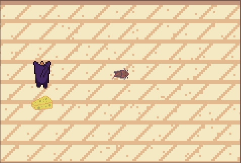
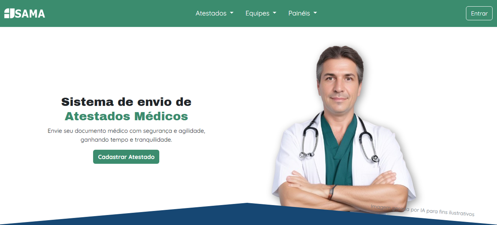

Projetos
Mallow

RunRat

SAMA

Bom dia! Meu nome é Kauan Domingues. Eu sou estudante de Análise e Desenvolvimento de Sistemas na Fatec São Paulo. Atualmente, sou competidor AWS na SP Skills, representando o SENAI Santos Dumont (São José dos Campos) na modalidade de Computação em Nuvem. Meu interesse por desenvolvimento de jogos foi o que me apresentou ao mundo da programação. Durante o curso de Operação de Microcomputador, no ensino médio, meu professor enxergou potencial em mim e me escolheu para um treinamento, que mais tarde me levou a representar o SENAI Santos Dumont na competição. Juntando minhas paixões, criatividade, lógica e tecnologia, decidi me tornar um desenvolvedor Fullstack.
Desenvolvimento Web (2024)
Plataforma Alura — Novo Ensino Médio
Estudos em HTML, CSS e JavaScript com foco em boas práticas, responsividade e estruturação de projetos.
Treinamento em Computação em Nuvem (2023 – atual)
SENAI – AWS / SP Skills
Selecionado por desempenho para representar o SENAI Santos Dumont na competição SP Skills – modalidade Cloud Computing (AWS).
Estudos em fundamentos da AWS, bancos de dados (relacionais e não relacionais), redes e programação em Python.
Habilidades: responsabilidade, foco, resiliência, autoaprendizagem, resistência à pressão.
Operador de Microcomputador (2023) SENAI
Introdução à informática, pacote Office e estrutura de hardware.
Curso PlayGame (2022 – 2023)
Escola SAGA
Primeiro contato com lógica de programação e desenvolvimento de jogos.
Ciclo completo de projetos: do planejamento à execução.
>Habilidades: criatividade, organização, pensamento lógico.